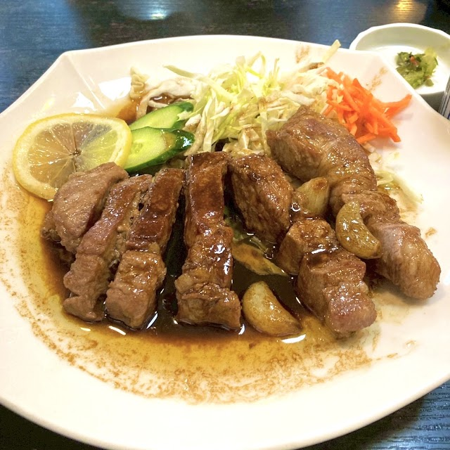
| 営業時間 | 水・木・金・土・日 11:00〜14:00, 17:00〜20:00 |
|---|---|
| 定休日 | 月・火曜 |
| 住所 | 三重県四日市市松本２丁目７−２４ |
| 予約 | 要確認 — ☎ 059-353-0748 ／ 公式サイト |
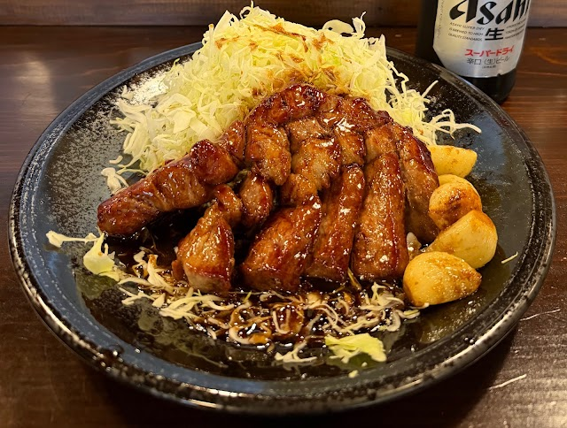
| 営業時間 | 月・火・水・金・土 11:00〜13:30, 17:30〜19:30 |
|---|---|
| 定休日 | 木・日曜 |
| 住所 | 三重県四日市市滝川町１９−８ |
| 予約 | 要確認 — ☎ 059-390-0671 ／ 公式サイト |
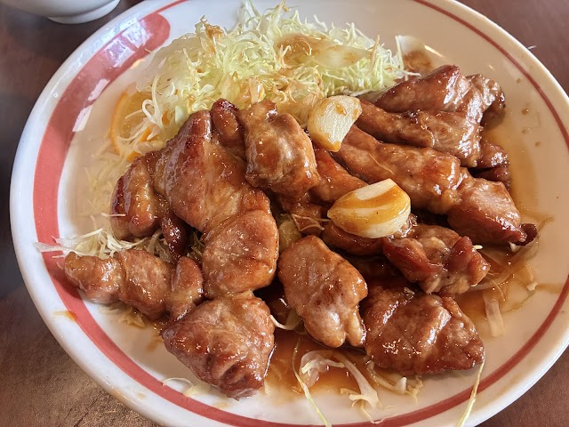
| 営業時間 | 火・水・金・土・日 11:00〜13:40 |
|---|---|
| 定休日 | 月・木曜 |
| 住所 | 三重県四日市市諏訪栄町１０−２ |
| 予約 | 可 — ☎ 059-352-5073 |
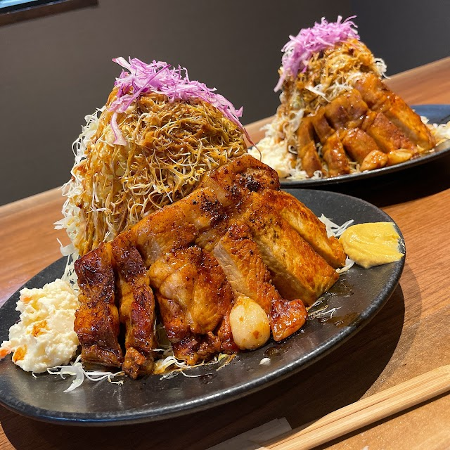
| 営業時間 | 月・火・金・土・日 11:00〜13:00, 17:00〜19:30 |
|---|---|
| 定休日 | 水・木曜 |
| 住所 | 三重県四日市市赤堀２丁目６−８ |
| 予約 | 要確認 — ☎ 059-358-3322 |
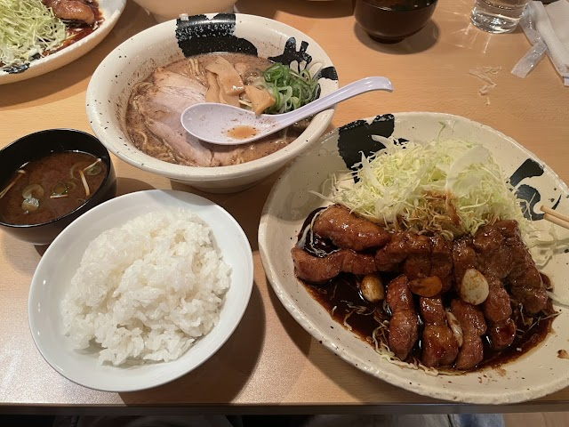
| 営業時間 | 月・火・水・木・金 11:00〜14:30, 18:00〜23:30 ／ 土・日 11:00〜15:00, 17:00〜23:30 |
|---|---|
| 定休日 | なし(要最終確認) |
| 住所 | 三重県四日市市安島１丁目２−２０ |
| 予約 | 要確認 — ☎ 059-356-1550 ／ 公式サイト |
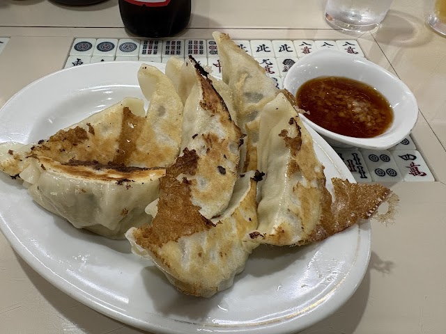
| 営業時間 | 火・水・木・金・土・日 11:30〜18:30 |
|---|---|
| 定休日 | 月曜 |
| 住所 | 三重県四日市市久保田２丁目１０−１ |
| 予約 | 要確認 — ☎ 059-353-1724 ／ 公式サイト |
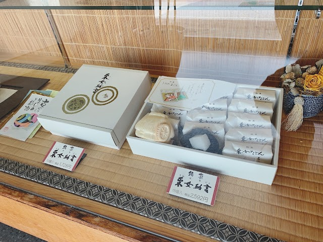
| 営業時間 | 月・水・金・土・日 8:30〜17:00 |
|---|---|
| 定休日 | 火・木曜 |
| 住所 | 三重県四日市市北町５−１３ |
| 予約 | 要確認 — ☎ 059-351-8800 ／ 公式サイト |
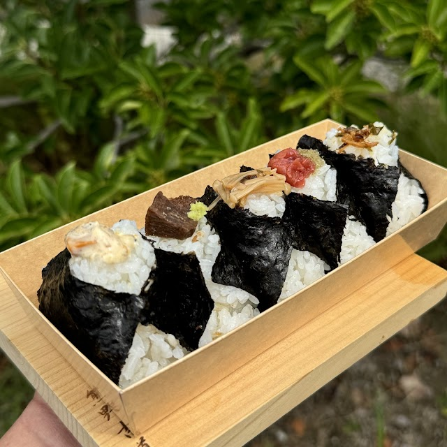
| 営業時間 | 月・金・土・日 11:00〜17:00 ／ 火・水・木 11:00〜15:00 |
|---|---|
| 定休日 | なし(要最終確認) |
| 住所 | 三重県四日市市中町２−８ |
| 予約 | 要確認 — ☎ 059-344-3832 ／ 公式サイト |
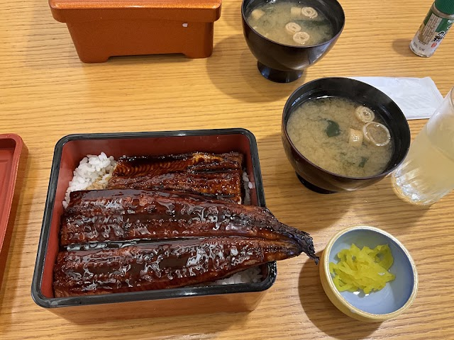
| 営業時間 | 月・水・木 11:30〜15:30 ／ 火 11:30〜14:00 ／ 土 11:00〜16:00 ／ 日 11:00〜15:30 |
|---|---|
| 定休日 | 金曜 |
| 住所 | 三重県四日市市六呂見１０７６ |
| 予約 | 可 — ☎ 059-327-7299 ／ 公式サイト |
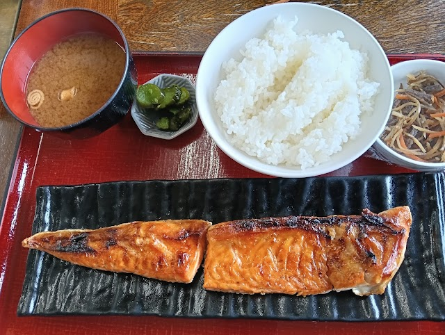
| 営業時間 | 月・火・水・木・金 7:00〜18:30 ／ 土・日 7:00〜19:30 |
|---|---|
| 定休日 | なし(要最終確認) |
| 住所 | 三重県四日市市富双町２−１−３０ |
| 予約 | 要確認 — ☎ 059-365-3123 ／ 公式サイト |
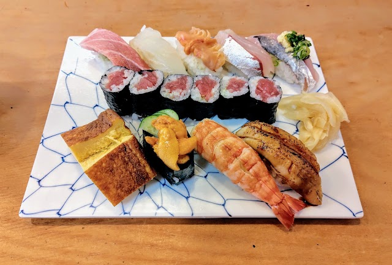
| 営業時間 | 月・火・水・木・金・土 11:30〜13:30, 17:00〜22:00 |
|---|---|
| 定休日 | 日曜 |
| 住所 | 三重県四日市市浜田町１２−３ |
| 予約 | 可 — ☎ 059-352-6621 ／ 公式サイト |
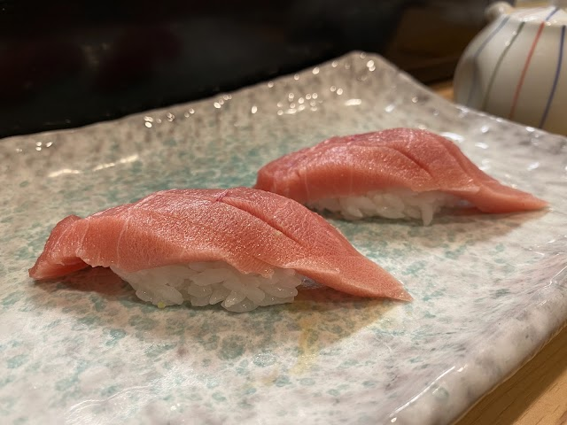
| 営業時間 | 月・火・木・金・土・日 18:00〜0:00 |
|---|---|
| 定休日 | 水曜 |
| 住所 | 三重県四日市市諏訪栄町7−３０−７ 番街ビル 1F |
| 予約 | 可 — ☎ 059-327-7895 ／ 公式サイト |
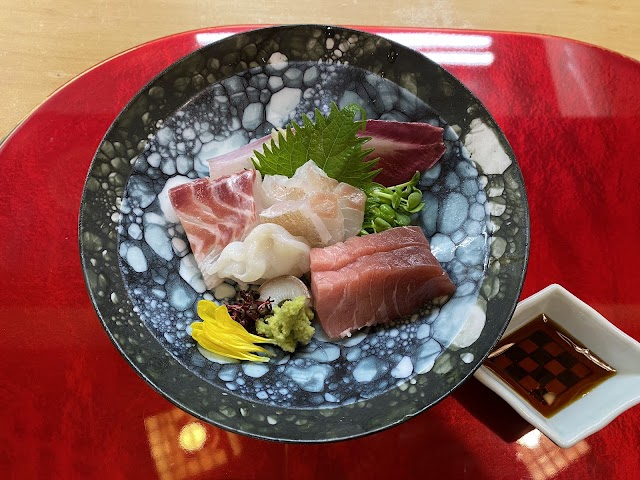
| 営業時間 | 月・火・木・金・土・日 11:30〜14:00, 17:30〜22:00 |
|---|---|
| 定休日 | 水曜 |
| 住所 | 三重県四日市市鵜の森２丁目１１−３ シュロス 鵜の森 1C |
| 予約 | 可 — ☎ 050-5263-2542 ／ 公式サイト |
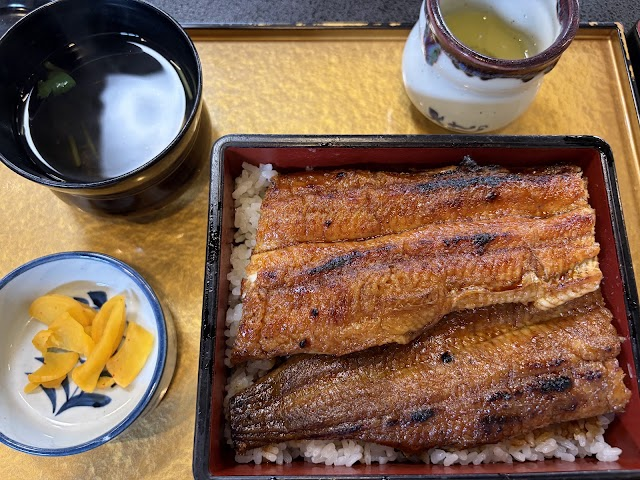
| 営業時間 | 月・火・水・金・土・日 11:00〜15:00, 17:00〜20:30 |
|---|---|
| 定休日 | 木曜 |
| 住所 | 三重県四日市市城西町８−１５ |
| 予約 | 可 — ☎ 059-353-0100 ／ 公式サイト |
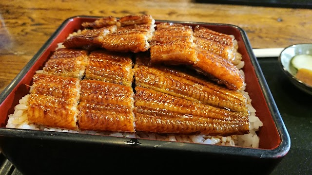
| 営業時間 | 月・火・金 11:00〜14:00 ／ 土・日 11:00〜14:00, 17:00〜20:00 |
|---|---|
| 定休日 | 水・木曜 |
| 住所 | 三重県四日市市桜町１５３−１ |
| 予約 | 可 — ☎ 059-326-3615 ／ 公式サイト |
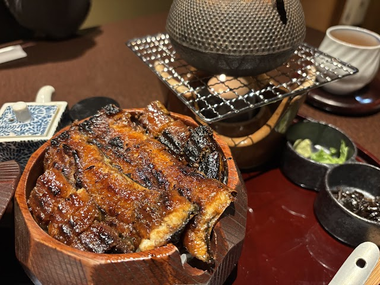
| 営業時間 | 水・木・金・土・日 11:00〜15:00, 17:30〜22:00 |
|---|---|
| 定休日 | 月・火曜 |
| 住所 | 三重県四日市市諏訪栄町６−１８ |
| 予約 | 可 — ☎ 059-350-1777 ／ 公式サイト |
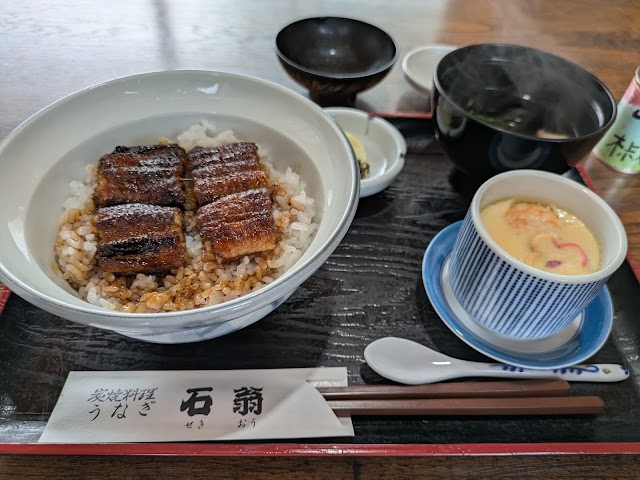
| 営業時間 | 月・水・木・金・土・日 11:30〜14:00, 17:00〜21:00 |
|---|---|
| 定休日 | 火曜 |
| 住所 | 三重県四日市市あかつき台３丁目４−８ |
| 予約 | 可 — ☎ 059-337-0223 ／ 公式サイト |
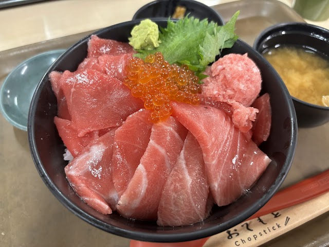
| 営業時間 | 月・火・水・木・金・土・日 8:00〜20:00 |
|---|---|
| 定休日 | なし(要最終確認) |
| 住所 | 三重県四日市市富双２丁目１−１５ |
| 予約 | 要確認 — ☎ 059-365-6064 ／ 公式サイト |
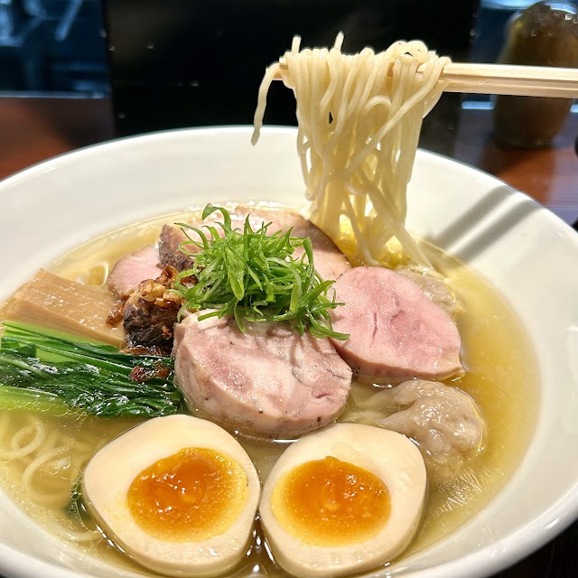
| 営業時間 | 火・水・木・金・土・日 11:00〜15:00 |
|---|---|
| 定休日 | 月曜 |
| 住所 | 三重県四日市市城北町１−１２ |
| 予約 | 要確認 — ☎ 059-351-5227 ／ 公式サイト |
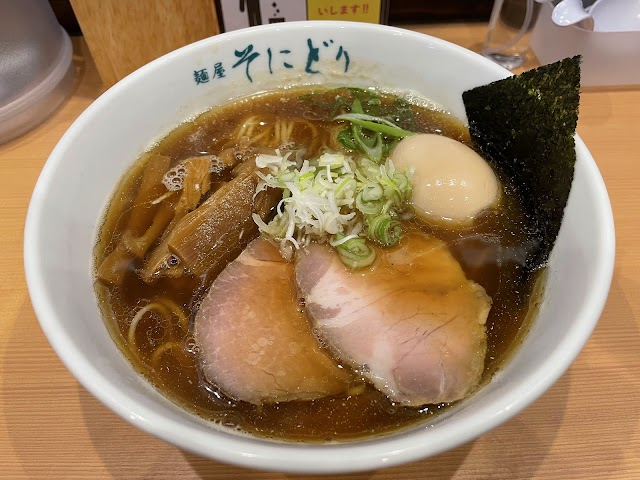
| 営業時間 | 水・木・金 11:00〜14:00, 18:00〜20:00 ／ 土・日 11:00〜15:00, 18:00〜20:00 |
|---|---|
| 定休日 | 月・火曜 |
| 住所 | 三重県四日市市堀木２丁目１０−２０ |
| 予約 | 要確認 — ☎ 059-336-6347 ／ 公式サイト |
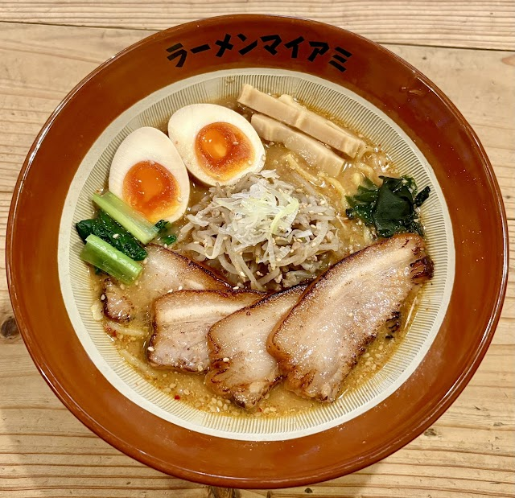
| 営業時間 | 月・火・水・木 17:30〜1:00 ／ 金 17:30〜3:00 ／ 土・日 11:00〜14:30, 17:30〜3:00 |
|---|---|
| 定休日 | なし(要最終確認) |
| 住所 | 三重県四日市市西日野町２７５−１ |
| 予約 | 要確認 — ☎ 059-323-1211 ／ 公式サイト |
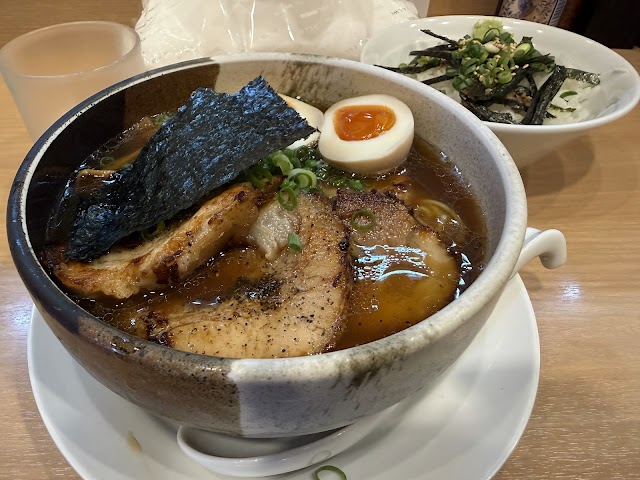
| 営業時間 | 月・火 10:50〜14:00 ／ 木・金・土・日 10:50〜14:00, 18:00〜20:00 |
|---|---|
| 定休日 | 水曜 |
| 住所 | 三重県四日市市日永西２丁目１９−３ |
| 予約 | 要確認 — ☎ 059-348-3990 ／ 公式サイト |
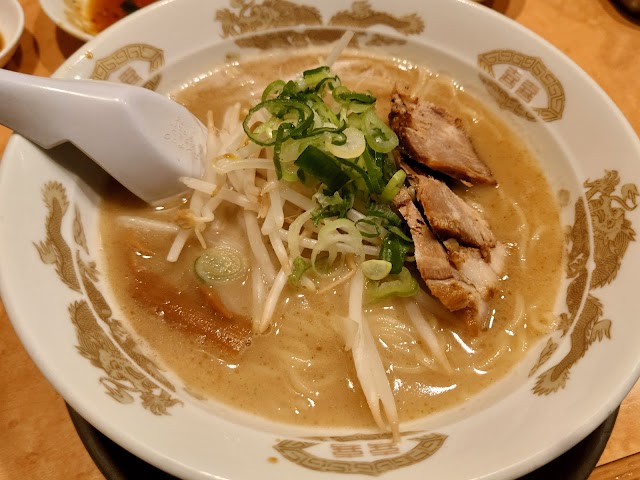
| 営業時間 | 月・火・水・木 11:30〜13:20, 17:00〜0:50 ／ 金 11:30〜13:20, 17:00〜2:50 ／ 土 17:00〜2:50 |
|---|---|
| 定休日 | 日曜 |
| 住所 | 三重県四日市市西新地１０−１ |
| 予約 | 要確認 — ☎ 059-351-9496 |
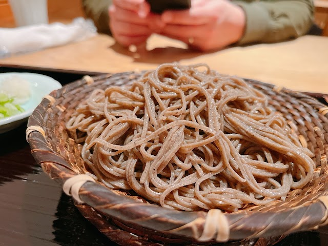
| 営業時間 | 水・木・金・土 11:00〜13:30, 17:30〜20:30 ／ 日 11:00〜13:30 |
|---|---|
| 定休日 | 月・火曜 |
| 住所 | 三重県四日市市西新地１１−３ |
| 予約 | 可 — ☎ 059-351-9376 ／ 公式サイト |
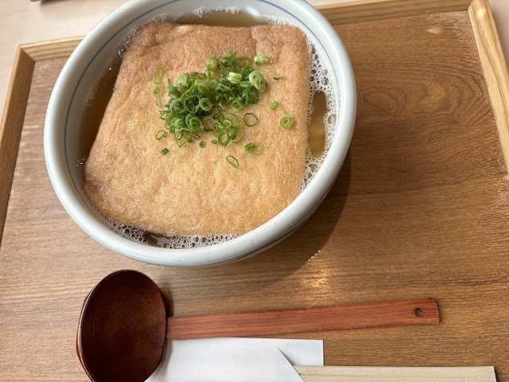
| 営業時間 | 月・火・水・木・金・土 10:30〜14:30 |
|---|---|
| 定休日 | 日曜 |
| 住所 | 三重県四日市市南浜田町８−２０ ゆたかビル 1階 |
| 予約 | 要確認 — ☎ 059-337-9703 ／ 公式サイト |
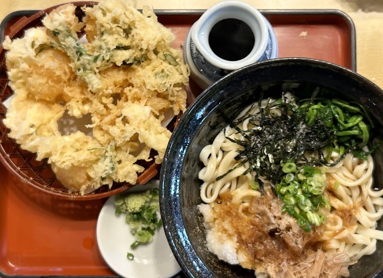
| 営業時間 | 月・水・木・金・土・日 11:00〜14:00, 17:00〜20:00 |
|---|---|
| 定休日 | 火曜 |
| 住所 | 三重県四日市市曙町１４−１０ |
| 予約 | 要確認 — ☎ 059-352-2451 ／ 公式サイト |
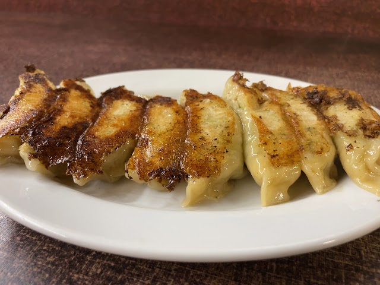
| 営業時間 | 火・水・木・日 11:00〜13:30, 17:30〜20:30 ／ 金・土 11:00〜13:30, 17:30〜21:30 |
|---|---|
| 定休日 | 月曜 |
| 住所 | 三重県四日市市諏訪栄町１２−１ |
| 予約 | 可 — ☎ 090-2265-7137 ／ 公式サイト |
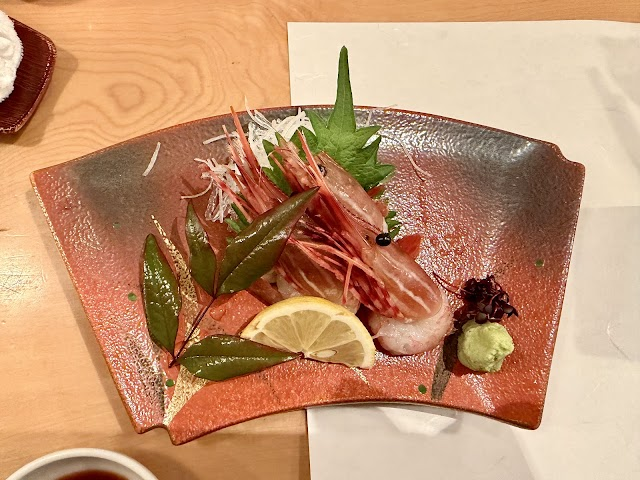
| 営業時間 | 月・火・水・木・金・土・日 17:00〜22:00 |
|---|---|
| 定休日 | なし(要最終確認) |
| 住所 | 三重県四日市市諏訪栄町３−８ |
| 予約 | 可 — ☎ 059-351-1080 ／ 公式サイト |
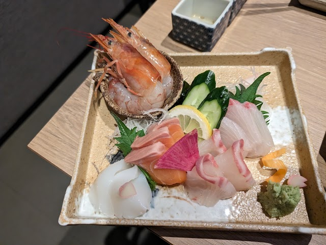
| 営業時間 | 月・火・水・木・金・土・日 17:00〜23:00 |
|---|---|
| 定休日 | なし(要最終確認) |
| 住所 | 三重県四日市市諏訪栄町１２−６ 諏訪パークビル 1F |
| 予約 | 可 — ☎ 059-340-5299 ／ 公式サイト |
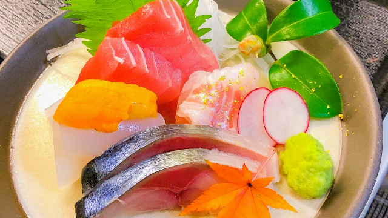
| 営業時間 | 月・火・水・木・金 11:30〜13:30, 17:00〜22:00 ／ 土 11:30〜14:00, 17:00〜22:00 ／ 日 17:00〜22:00 |
|---|---|
| 定休日 | なし(要最終確認) |
| 住所 | 三重県四日市市諏訪栄町１１−２ |
| 予約 | 可 — ☎ 059-329-5139 ／ 公式サイト |
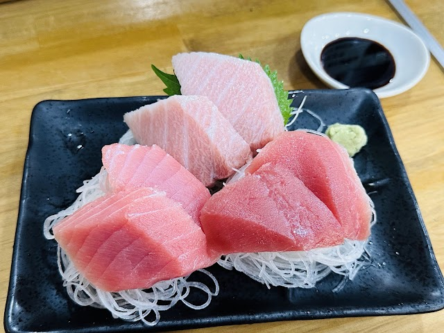
| 営業時間 | 月・火・木・金・土 10:00〜21:00 ／ 日 10:00〜15:00 |
|---|---|
| 定休日 | 水曜 |
| 住所 | 三重県四日市市諏訪栄町１０−１３ 共栄ビル １F |
| 予約 | 要確認 — 公式サイト |
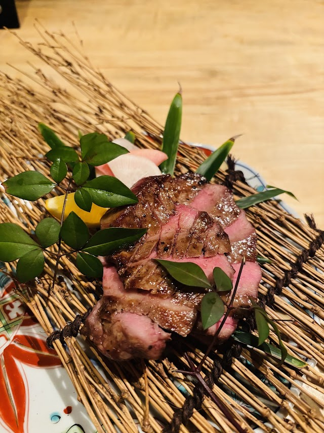
| 営業時間 | 月・火・水・木・金・土・日 11:00〜15:00, 17:00〜21:00 |
|---|---|
| 定休日 | なし(要最終確認) |
| 住所 | 三重県四日市市日永３丁目７−１０ |
| 予約 | 可 — ☎ 059-344-3995 ／ 公式サイト |
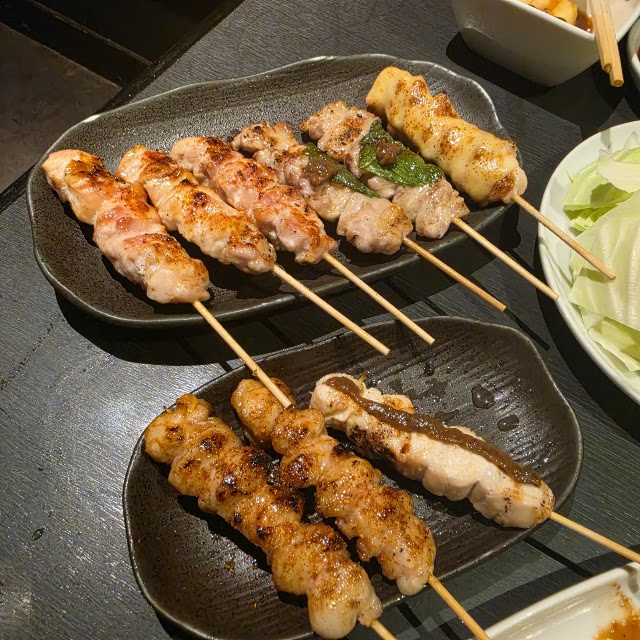
| 営業時間 | 月・火・水・木・日 18:00〜23:00 ／ 金・土 18:00〜0:00 |
|---|---|
| 定休日 | なし(要最終確認) |
| 住所 | 三重県四日市市諏訪栄町１１−１ |
| 予約 | 可 — ☎ 059-353-2848 ／ 公式サイト |
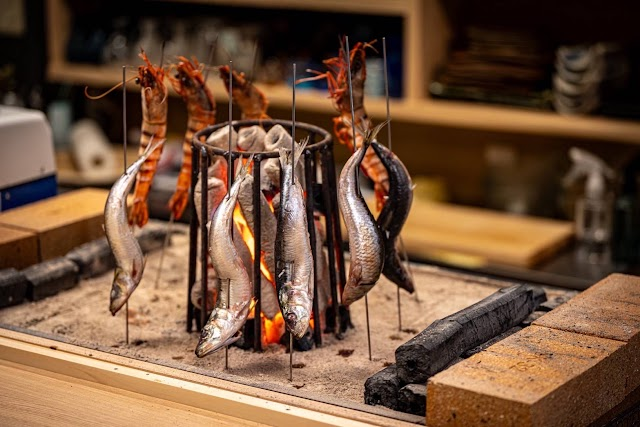
| 営業時間 | 月・火・水・木・金 17:30〜2:00 ／ 土 17:00〜2:00 |
|---|---|
| 定休日 | 日曜 |
| 住所 | 三重県四日市市西新地４−６ タウンエステート 一階 |
| 予約 | 可 — ☎ 059-340-8222 ／ 公式サイト |
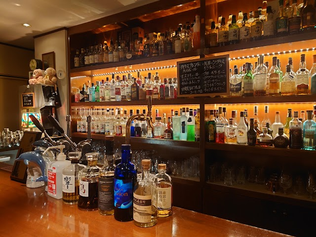
| 営業時間 | 月・火・水・木・金・土 20:00〜2:00 ／ 日 20:00〜0:00 |
|---|---|
| 定休日 | なし(要最終確認) |
| 住所 | 三重県四日市市諏訪栄町７−１８ 林ビル 1F |
| 予約 | 要確認 — ☎ 059-357-3221 ／ 公式サイト |
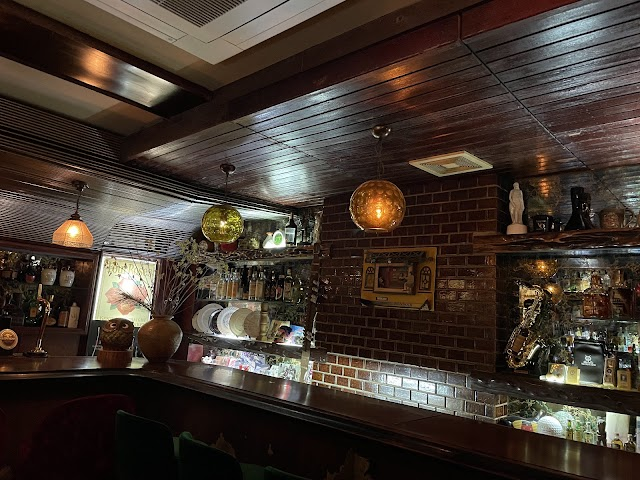
| 営業時間 | 19:00〜翌1:00（LO24:30） |
|---|---|
| 定休日 | 日曜 |
| 住所 | 三重県四日市市諏訪栄町１４−６ |
| 予約 | 可 |
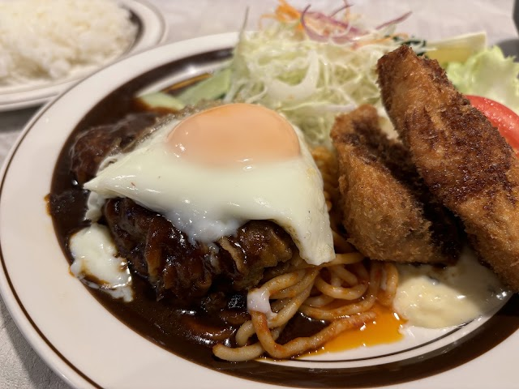
| 営業時間 | 水・木・金・土・日 11:30〜13:30, 17:15〜20:00 |
|---|---|
| 定休日 | 月・火曜 |
| 住所 | 三重県四日市市北浜町２−１７ アイティーオービル |
| 予約 | 可 — ☎ 059-351-3561 ／ 公式サイト |
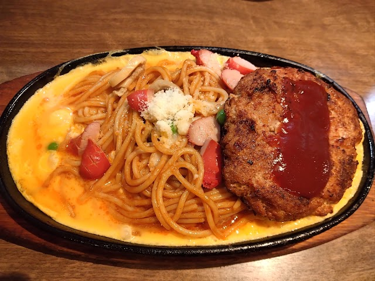
| 営業時間 | 火・水・木 11:00〜14:00, 17:00〜21:30 ／ 金・土 11:00〜14:00, 17:00〜22:30 ／ 日 11:00〜14:00 |
|---|---|
| 定休日 | 月曜 |
| 住所 | 三重県四日市市諏訪栄町１９−５ |
| 予約 | 可 — ☎ 059-351-4495 ／ 公式サイト |
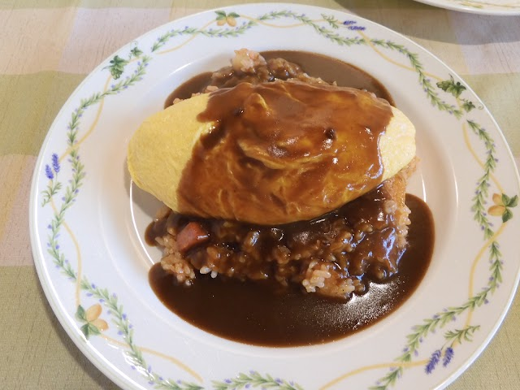
| 営業時間 | 月・火・水・木・金・土・日 11:00〜14:30 |
|---|---|
| 定休日 | なし(要最終確認) |
| 住所 | 三重県四日市市蒔田４丁目１−３３ |
| 予約 | 要確認 — ☎ 059-366-0181 ／ 公式サイト |
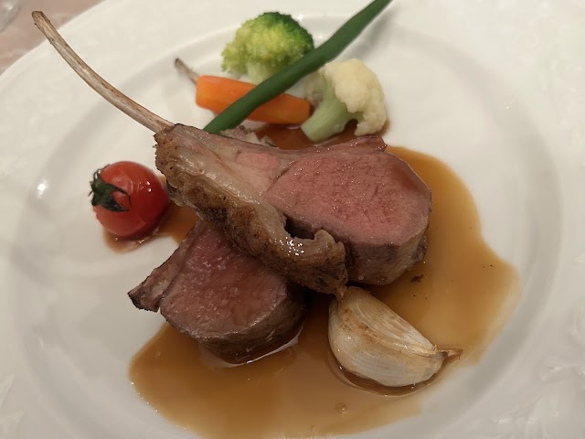
| 営業時間 | 月・火・水・木・金・土 11:30〜14:00, 17:30〜21:30 |
|---|---|
| 定休日 | 日曜 |
| 住所 | 三重県四日市市伊坂台１丁目８ |
| 予約 | 可 — ☎ 059-366-1533 ／ 公式サイト |
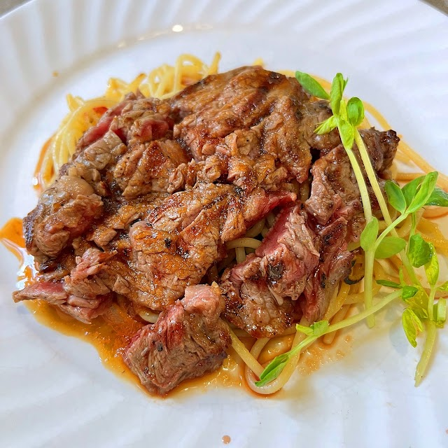
| 営業時間 | 火・水・木・金・土・日 11:00〜14:00, 17:00〜20:00 |
|---|---|
| 定休日 | 月曜 |
| 住所 | 三重県四日市市中村町７６７−１ |
| 予約 | 要確認 — ☎ 059-337-0754 |
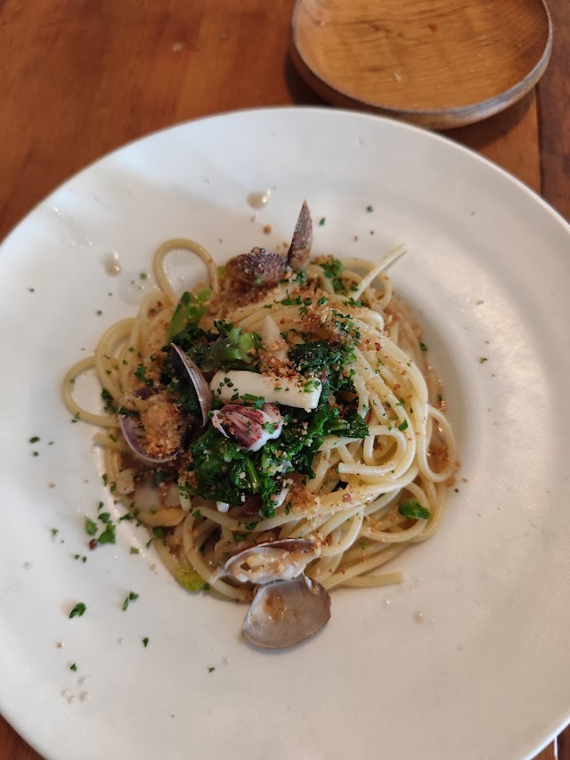
| 営業時間 | 月・火 18:00〜22:00 ／ 水・木・金・土 11:30〜14:00, 18:00〜22:00 |
|---|---|
| 定休日 | 日曜 |
| 住所 | 三重県四日市市元町９−１４ |
| 予約 | 可 — ☎ 059-354-9350 ／ 公式サイト |
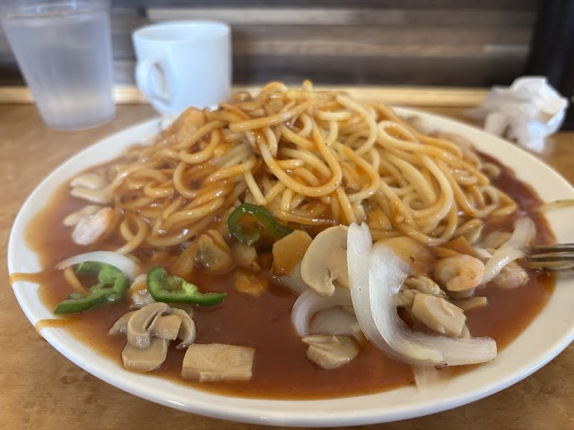
| 営業時間 | 月・火・水・木・金・土 11:00〜15:00, 17:30〜20:00 ／ 日 11:00〜15:00 |
|---|---|
| 定休日 | なし(要最終確認) |
| 住所 | 三重県四日市市諏訪町１２−４ |
| 予約 | 要確認 — ☎ 059-352-4765 ／ 公式サイト |
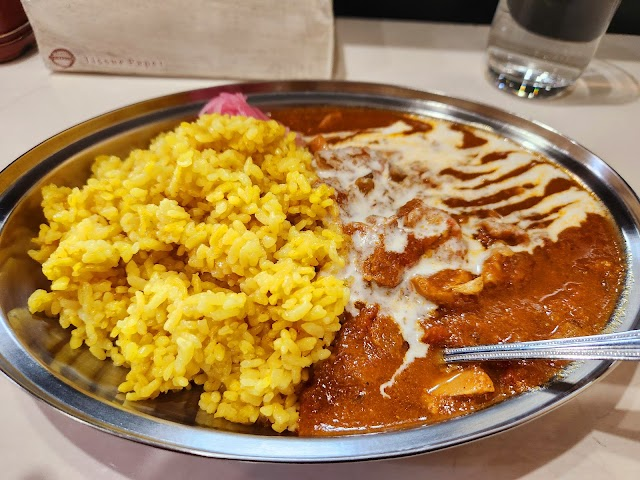
| 営業時間 | 11:30〜15:00頃（不定期営業・SNSで告知） |
|---|---|
| 定休日 | 不定休 |
| 住所 | 三重県四日市市西浦１丁目３−１２ |
| 予約 | 要確認 — 公式サイト |
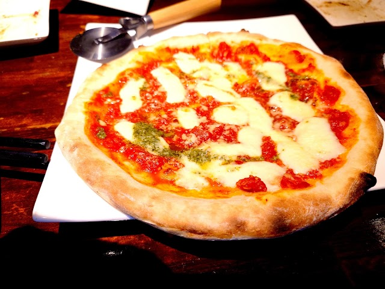
| 営業時間 | 火・水・木 11:00〜14:00, 18:00〜0:00 ／ 金・土 11:00〜14:00, 18:00〜1:00 |
|---|---|
| 定休日 | 月・日曜 |
| 住所 | 三重県四日市市諏訪栄町１９−８ |
| 予約 | 可 — ☎ 050-5487-3795 ／ 公式サイト |
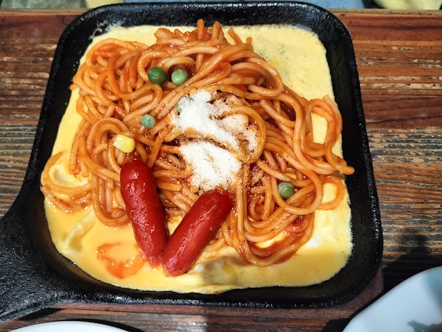
| 営業時間 | 月・水・木・金・土・日 8:00〜17:30 |
|---|---|
| 定休日 | 火曜 |
| 住所 | 三重県四日市市諏訪栄町１５−６ |
| 予約 | 要確認 — ☎ 059-352-3441 |
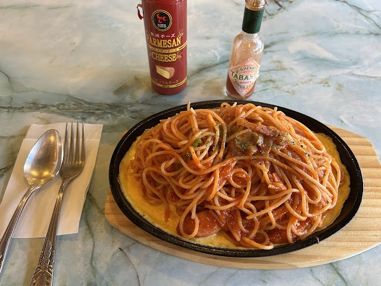
| 営業時間 | 月・火・水 7:00〜18:00 ／ 土・日 8:00〜18:00 |
|---|---|
| 定休日 | 木・金曜 |
| 住所 | 三重県四日市市城西町１４−８ |
| 予約 | 可 — ☎ 059-351-2215 ／ 公式サイト |
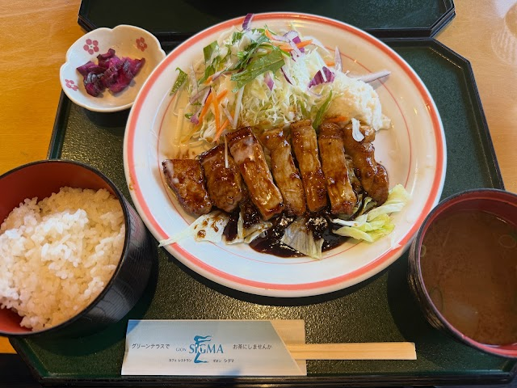
| 営業時間 | 火・水・木・土・日 8:00〜18:00 ／ 金 8:00〜17:00 |
|---|---|
| 定休日 | 月曜 |
| 住所 | 三重県四日市市久保田１丁目５−２０１ |
| 予約 | 要確認 — ☎ 059-351-6830 |
| 営業時間 | 月・火・水・木・金・土 8:30〜18:00 |
|---|---|
| 定休日 | 日曜 |
| 住所 | 三重県四日市市本町６−７ |
| 予約 | 要確認 — ☎ 059-352-2463 ／ 公式サイト |
| 営業時間 | 月・木・金・土・日 11:00〜18:00 |
|---|---|
| 定休日 | 火・水曜 |
| 住所 | 三重県四日市市京町２−１３ 萬古工業会館 1階 |
| 予約 | 要確認 — ☎ 059-324-7956 ／ 公式サイト |
| 営業時間 | 木・金・土 10:00〜17:00 |
|---|---|
| 定休日 | 月・火・水・日曜 |
| 住所 | 三重県四日市市水沢町９９８ |
| 予約 | 要確認 — ☎ 059-329-2611 ／ 公式サイト |
| 営業時間 | 火・水・木・金・土・日 10:00〜16:00 |
|---|---|
| 定休日 | 月曜 |
| 住所 | 三重県四日市市鵜の森１丁目１３−１７ |
| 予約 | 要確認 — ☎ 059-352-4960 ／ 公式サイト |
| 営業時間 | 月・火・木・金・土・日 9:00〜17:00 |
|---|---|
| 定休日 | 水曜 |
| 住所 | 三重県四日市市下海老町109ー8 |
| 予約 | 要確認 — ☎ 059-390-1513 ／ 公式サイト |
本ガイドは個人利用目的で作成。掲載情報は2026年9月時点の調査に基づく。写真出典: Google Maps投稿写真(©各投稿者/Google)。